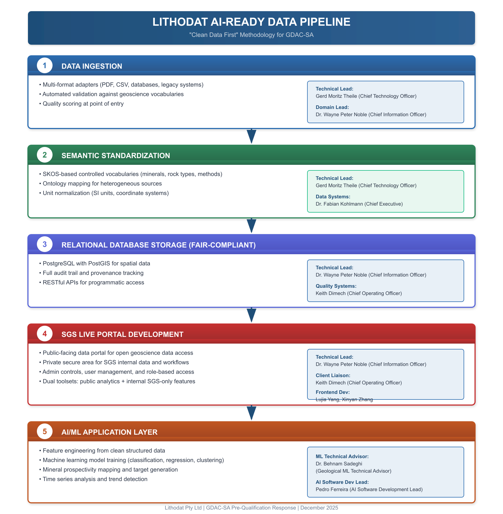

Lithodat Pty Ltd is honored to submit our pre-qualification response for the Geological Data Analysis Center (GDAC-SA) AI/Big Data Analytics Platform. We recognize that the Saudi Geological Survey has received approval to establish a transformational platform that will enable Saudi Arabia's Vision 2030 objective of developing the mining sector as the Kingdom's third economic pillar. This platform must integrate diverse geological data types—reports, geochemistry, geophysics, remote sensing, geology, and drilling records—from the National Geological Database (NGD), National Information Center (NIC), and new field campaigns, then apply advanced AI analytics to deliver mineral prospectivity predictions, target generation, and exploratory forecasting capabilities. The Saudi Geological Survey correctly identifies that much of this data exists with varying quality, incomplete metadata, inconsistent formats, and aggregations spanning decades of geological work.
We are uniquely positioned to deliver this vision because we have already built exactly what GDAC-SA envisions. Over the past decade, Lithodat has successfully delivered three national-scale geological data integration platforms for federal government geological surveys in Australia and Canada: EarthBank (national geochemistry platform for Geoscience Australia), Isotopes.au (federal stable isotope platform developed with CSIRO and four other Australian government agencies), and the CATCH Database (Canadian Thermochronology Database for Natural Resources Canada). These platforms integrate precisely the type of heterogeneous, multi-agency, multi-decade geological data that GDAC-SA must harmonize, and they power AI-enabled analytics for mineral exploration, environmental assessment, and geoscientific research. Our track record demonstrates not just theoretical capability, but proven operational delivery of the exact infrastructure GDAC-SA requires.
The Saudi Geological Survey's RFQ emphasizes a four-phase evolution: Phase 1 establishing a proof-of-concept data ecosystem and pilot mineral prospectivity model within 12 months; Phase 2 expanding to advanced AI-based exploration tools and taxonomic models mimicking mineral systems; Phase 3 broadening data integration to encompass wider geoscience topics; and Phase 4 developing cumulative impact analysis for environmental and social assessment. This phased approach mirrors our successful implementations for government geological surveys. EarthBank began with core geochemical data integration, then expanded to isotopes, geochronology, and thermochronology. Isotopes.au launched with agricultural applications and is expanding to fisheries and aquaculture. The CATCH Database started with northern Canada and is now extending to southern Canada with thermal history modeling capabilities. We understand how to deliver Phase 1 foundations that enable long-term platform evolution, because we have executed this exact development pathway three times.
The Critical Foundation: Clean Data First for AI Success
The RFQ correctly identifies GDAC-SA's fundamental challenge: creating a unified geospatial analytics platform from data sources with "aggregations of data and gaps, including structured and unstructured data, some of which are without metadata." The Saudi Geological Survey recognizes that Phase 1 must create "the underlying data ecosystem" through data structure design, feature engineering, natural language processing, and new algorithm development. This understanding is precisely correct, and we must emphasize a critical principle that determines whether GDAC-SA succeeds or fails: the only pathway to AI-enabled mineral exploration workflows is through clean, standardized, FAIR-compliant data. Machine learning models cannot overcome poor data quality. No amount of sophisticated AI algorithms can extract reliable mineral prospectivity predictions from inconsistent terminology, missing spatial coordinates, incompatible measurement units, or uncontrolled vocabularies. Attempts to "bolt on" AI to poorly structured data inevitably fail because garbage data produces garbage predictions.
Lithodat's "Clean Data First" methodology ensures that every data ingestion, transformation, and storage step creates AI-ready datasets from day one. Our proven five-stage pipeline has successfully powered three national platforms, and this exact architecture will deliver GDAC-SA's requirements:

Stage 1 (Data Ingestion) employs multi-format adapters that handle PDF reports, CSV datasets, legacy databases, and unstructured data with automated validation against geoscience vocabularies and quality scoring at point of entry. For the CATCH Database, we digitized 50+ years of legacy data (1970-2021) from 91 disparate sources including analogue paper reports, non-vectorized PDFs, and published figures, georeferencing sample locations from maps without GPS coordinates—exactly the historical data challenge GDAC-SA faces with NGD and NIC archives. Technical leadership: Gerd Moritz Theile (Chief Technology Officer), Dr. Wayne Peter Noble (Chief Information Officer).
Stage 2 (Semantic Standardization) creates SKOS-based controlled vocabularies (ontologies) that map diverse terminology to standardized concepts, enabling AI feature engineering across heterogeneous sources. For EarthBank, we developed 250+ standardized field mappings validated across six institutional data sources from three federal agencies—directly analogous to GDAC's challenge of harmonizing Saudi Geological Survey data across departments with different conventions. For example, EarthBank's mineral ontology maps "K-feldspar," "potassium feldspar," "orthoclase," and "microcline" to unified concepts, allowing machine learning models to recognize mineral relationships across datasets spanning decades and multiple agencies. This semantic interoperability is essential for Phase 1's data ecosystem and Phase 2's AI-based mineral system modeling. Technical leadership: Gerd Moritz Theile (Chief Technology Officer), Dr. Fabian Kohlmann (Chief Executive).
Stage 3 (FAIR-Compliant Database Storage) implements PostgreSQL with PostGIS for spatial data, comprehensive metadata capture, full audit trail and provenance tracking, and RESTful APIs for programmatic access by AI workflows. EarthBank achieved CoreTrustSeal certification—the international standard for trustworthy digital repositories—demonstrating our implementation of FAIR (Findable, Accessible, Interoperable, Reusable) data principles. FAIR data is not merely a compliance requirement; it is the technical foundation that enables AI success. Findability through rich metadata allows algorithms to automatically discover relevant features (mineral associations, structural controls, geochemical signatures). Accessibility via RESTful APIs enables external machine learning frameworks (PyTorch, TensorFlow, scikit-learn) to programmatically access training datasets. Interoperability through controlled vocabularies creates the semantic standardization essential for feature engineering. Reusability with comprehensive provenance tracking allows Phase 2 models to be retrained as new data arrives in Phases 3-4 without quality degradation. Technical leadership: Dr. Wayne Peter Noble (Chief Information Officer), Keith Dimech (Chief Operating Officer).
Stage 4 (SGS Live Portal Development) creates dual-access systems: public-facing data portals for open geoscience access by researchers and industry, plus private secure areas for SGS internal workflows with role-based access control and user management. EarthBank and Isotopes.au are fully operational public platforms serving geoscientists globally while maintaining secure administrative features for government analytical requirements. Technical leadership: Dr. Wayne Peter Noble (Chief Information Officer), Keith Dimech (Chief Operating Officer), Frontend Team (Lujia Yang, Xinyan Zhang).
Stage 5 (AI/ML Application Layer) delivers advanced analytics through feature engineering from clean structured data, machine learning model training for classification/regression/clustering, mineral prospectivity mapping and target generation, and time series analysis for trend detection. Our team has published peer-reviewed research demonstrating exactly these capabilities: Farahbakhsh et al. (2025) "Machine learning-based spatio-temporal prospectivity modeling of porphyry systems" (Tectonics, DOI: 10.1029/2024TC008362) applied ML algorithms to 4D geochemical and geochronological datasets from EarthBank, directly addressing GDAC-SA Phase 2 mineral prospectivity requirements. Boone et al. (2023) "A geospatial platform for tectonic interpretation of low-temperature thermochronology Big Data" (Scientific Reports, DOI: 10.1038/s41598-023-35776-3), co-authored by Lithodat team members (Kohlmann, Noble, Theile), demonstrates automated analytics that process analytical results and generate geological interpretations—showcasing the AI-driven insights GDAC-SA Phase 1 envisions. Technical leadership: Dr. Behnam Sadeghi (Geological ML Technical Advisor), Pedro Ferreira (AI Software Development Lead).
Government Partnership Excellence and FAIR Data Credentials
Lithodat's partnerships with Geoscience Australia, CSIRO, the Australian Nuclear Science and Technology Organisation (ANSTO), and Natural Resources Canada demonstrate our capability to deliver mission-critical data infrastructure for federal government geological surveys. We understand government procurement processes, security requirements, long-term sustainability mandates, and the need for platforms that outlive initial contracts. Our CATCH Database work resulted in official government publication (Geological Survey of Canada Open File 9225, 2025) with Lithodat co-authorship (F. Kohlmann, M. McMillan), and Isotopes.au received an official launch announcement from CSIRO in February 2025. These are not vendor deliverables—they are collaborative government-industry partnerships recognized through co-authorship and joint announcements.
Lithodat is recognized as a leading expert in FAIR geoscience data implementation. Our team has published 45+ peer-reviewed papers, conference presentations, and government technical reports (see Appendix K: Publications Summary) demonstrating geoscience data integration expertise. Notable examples include Kohlmann et al. (2024) "Empowering Geochemical Exploration and Research: Lithodat's Collaborative Data Platforms and Partnerships" presented at Goldschmidt 2024, and multiple presentations by Wayne Noble and team members at international geoscience conferences on data integration architectures and FAIR principles in geological repositories. EarthBank's CoreTrustSeal certification provides independent validation of our FAIR implementation capabilities, and our official government collaborations demonstrate that federal agencies trust our platforms with their national geoscience data assets.
Commitment to GDAC-SA Success
Lithodat is not proposing a theoretical approach or adapting unrelated technology to geological requirements. We are offering a proven, operational platform architecture that has already delivered national-scale geological AI infrastructure for government agencies in Australia and Canada. For GDAC-SA Phase 1, we will implement the exact AI-ready data pipeline described above, integrating Saudi Geological Survey data from NGD and NIC into a unified geospatial platform with FAIR compliance, delivering mineral prospectivity predictions for the pilot area within the 12-month timeline. For Phases 2-4, we will evolve the platform using our proven expansion methodology demonstrated through Isotopes.au and CATCH multi-phase development, adding advanced AI analytics, broader geoscience integration, and cumulative impact assessment capabilities. Like our multi-year partnerships with Geoscience Australia and Natural Resources Canada, we are committed to building GDAC-SA as a sustainable national infrastructure asset that will serve the Kingdom's Vision 2030 mining sector objectives for decades to come.
The only way to AI-enabled mineral exploration is through clean, standardized, FAIR data. Lithodat has built this foundation three times for national geological surveys. We are ready to build it for Saudi Arabia.
Supporting Documentation: This pre-qualification response includes 11 appendices (A-L) providing comprehensive evidence of Lithodat's capabilities, financial stability, quality systems, publications, team credentials, and reference project summaries.